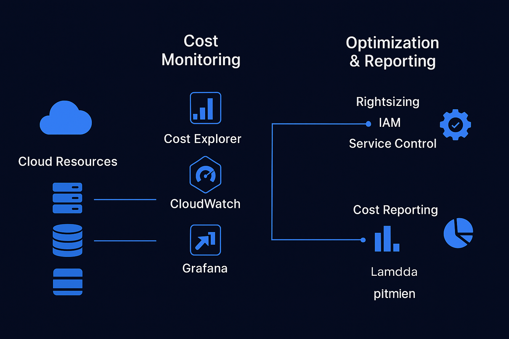

Cloud Cost Optimization

Cloud Cost Optimization (FinOps)
Overview
This project focuses on Cloud Cost Optimization using FinOps practices. It demonstrates how to monitor, analyze, and reduce cloud spend while ensuring scalability and performance. The project integrates automated reporting, cost alerts, and rightsizing policies.
Key Features
- Monitoring & Reporting: AWS Cost Explorer, CloudWatch, and Grafana dashboards for visibility.
- Resource Rightsizing: Automated detection of underutilized EC2, RDS, and EBS volumes.
- Cost Policies: IAM + Service Control Policies restrict overspending.
- Automation: Lambda scripts for scheduling, turning off unused dev/test instances.
- Reserved Instances & Savings Plans: Smart purchasing strategies for predictable workloads.
- Tagging & Chargeback: Business-unit tagging for accountability and showback/chargeback reports.
Workflow
- All AWS resources tagged by project/team.
- CloudWatch collects utilization metrics.
- FinOps dashboard highlights over-provisioned resources.
- Lambda triggers automated rightsizing (shutdown, resize, or terminate idle resources).
- Finance & engineering teams review monthly cost allocation reports.
- Governance enforces compliance with budget alerts.
Impact
This project reduced cloud costs by ~30% while improving accountability through chargeback reporting. It ensures cloud adoption is both scalable and financially efficient, aligning with business goals.
← Back to Projects